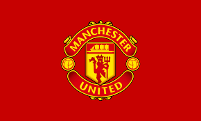

The Success of the Biggest Soccer Franchise
Manchester United is one of the most storied and successful football clubs in the world, with a rich history spanning over 140 years. Known as the "Red Devils," the club has established itself as a global brand with a massive fanbase across all continents. Their legacy is built on a tradition of attacking football, legendary players, and an unwavering winning mentality that has delivered countless trophies and memorable moments throughout football history.

Created by Alan Amankwah - 2nd October 2025